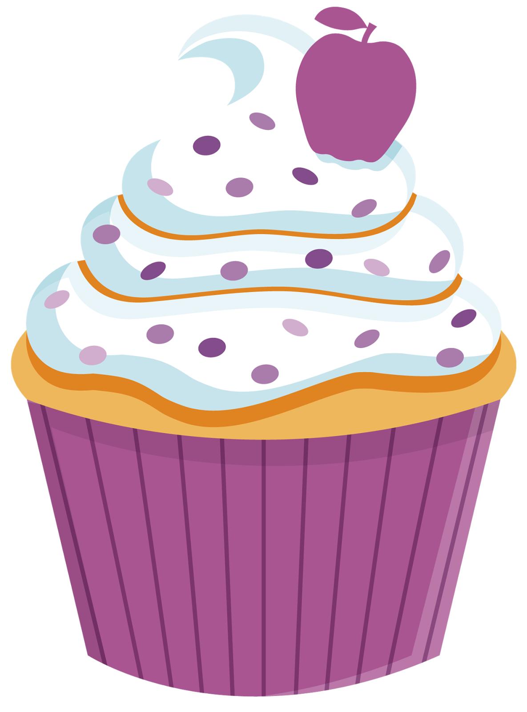

Baka med Olivia



Cheesecake

Det här är en av mina absoluta favorit bakverk just för att det finns så mycket olika varianter av cheesecake och man kan tillaga den på olika sätt, om du kanske inte har en ugn finns det fryst cheesecake som är minst lika gott. Botten basera på krossade kex och färskost som fyllning som kan smaksättas. Det vanligaste är att den tillagas i ugn, kyl eller frys.
Lemonad
Lemonad är något sött och kallt du kan skölja ner halsen med under sommaren. Det är en hemmagjord dryck gjord av citroner, vatten och socker.
Man kan även göra rosa lemonad med hallon eller jordgubbar och karamellfärg. Perfekt att bjuda på partyn och ha med till stranden.
Pannkakor
Pannkakor kan vara en enkel lunch med sylt eller bli en dessert med grädde, choklad och frukt. Att laga pannkakor är lätt och har ingridienser som man oftast har hemma. På internet kan man också hitta recept på gluten och laktosfria pannkakor.
Bullar
Kanelbullar är ett tidskrävande bakverk men det är absolut värt det. Den klassiska kanelbullen har utvecklats och nu kan du andvända så många olika smaker för att få den unik.Degen fylls med socker, smör och kanel. När de kommer ut ur ugnen är dem gyllenbruna och saftiga. Bullen är också ett bakverk som passar året om.